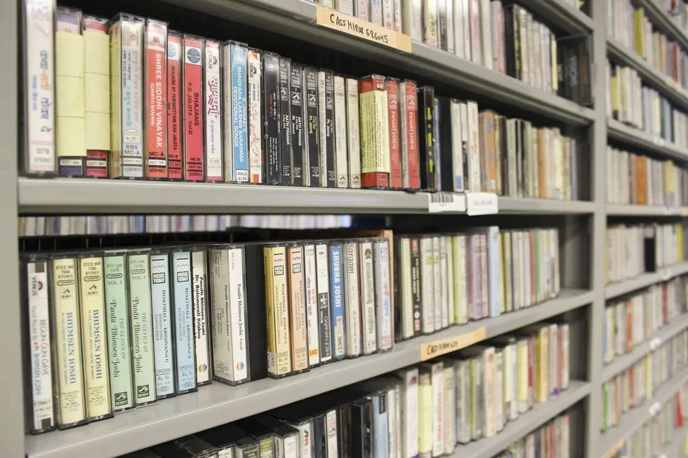
01
Кассета → компьютер
Музыка, домашние записи, голоса близких. Перенесу звук с аудиокассеты в цифровые файлы — их удобно слушать, хранить и пересылать родным.
Алексей · Хайфа, Израиль
На старых кассетах живут семейные праздники, первые слова детей и сборники, которые когда-то записывали друг для друга. Я перепишу их в цифровые файлы, чтобы они больше не потерялись.
А если хочется наоборот — запишу вашу музыку на кассету или компакт-диск.
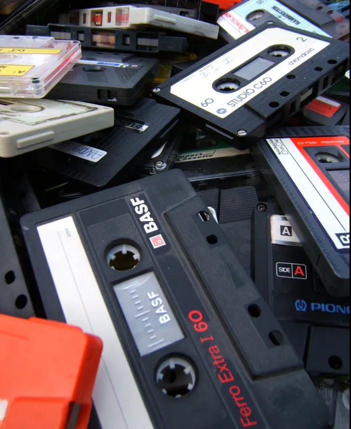
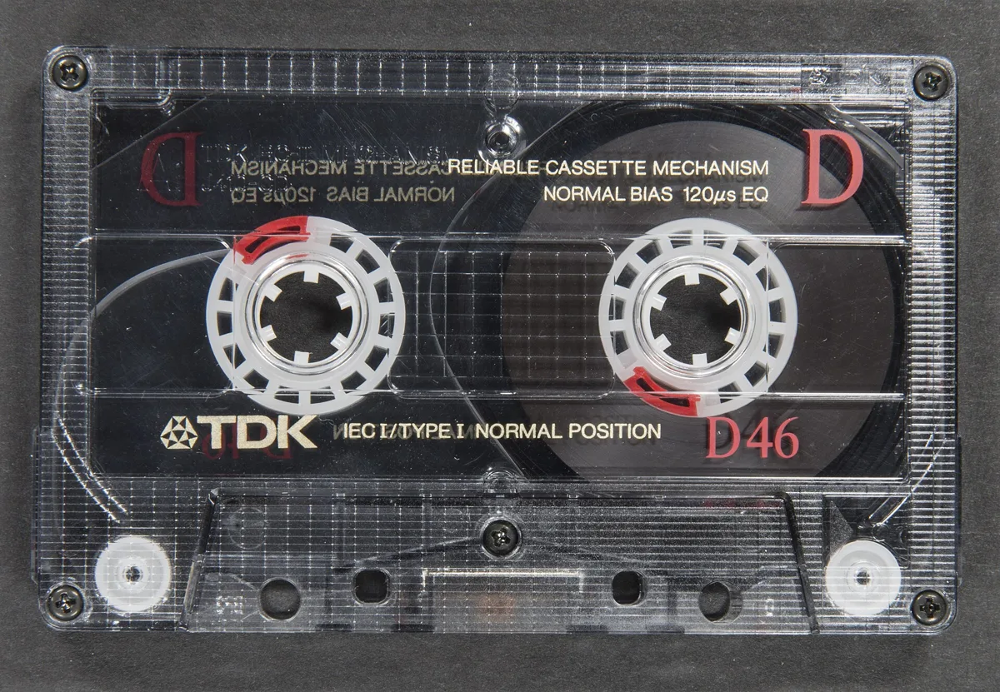
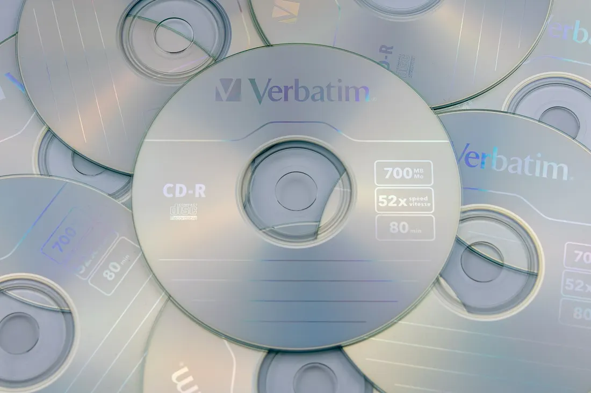
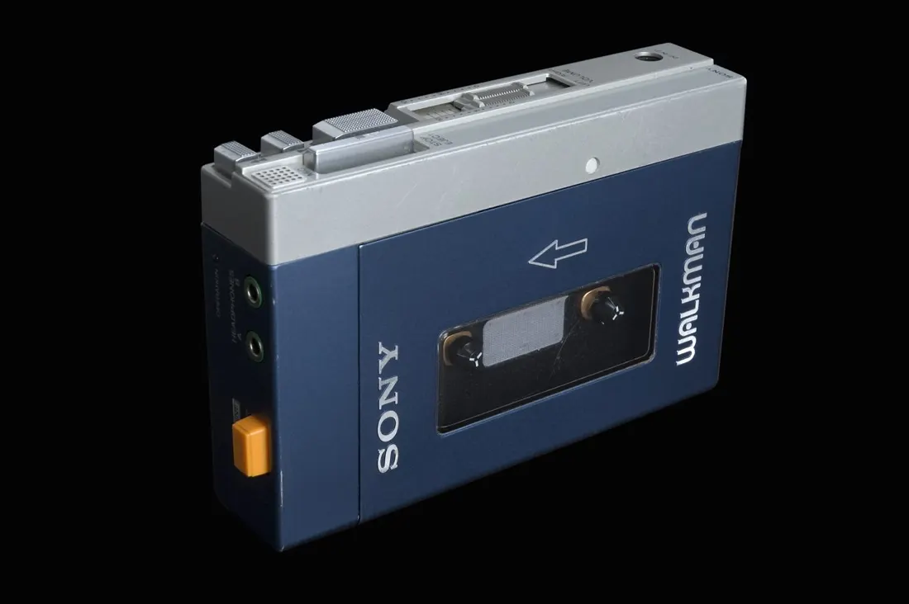
Плёнка с годами стареет, а магнитофонов становится всё меньше. Воспоминания — не должны.
Услуги

Музыка, домашние записи, голоса близких. Перенесу звук с аудиокассеты в цифровые файлы — их удобно слушать, хранить и пересылать родным.
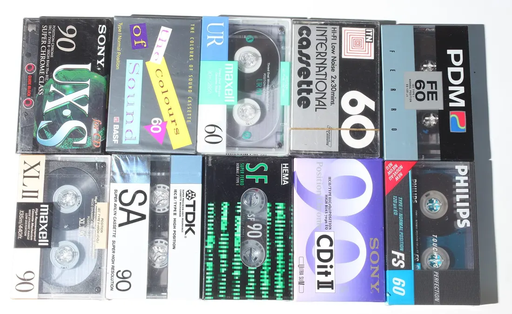
Плейлист, любимый альбом или собственный сборник. Запишу на аудиокассету — для магнитофона, плеера или в подарок со смыслом.
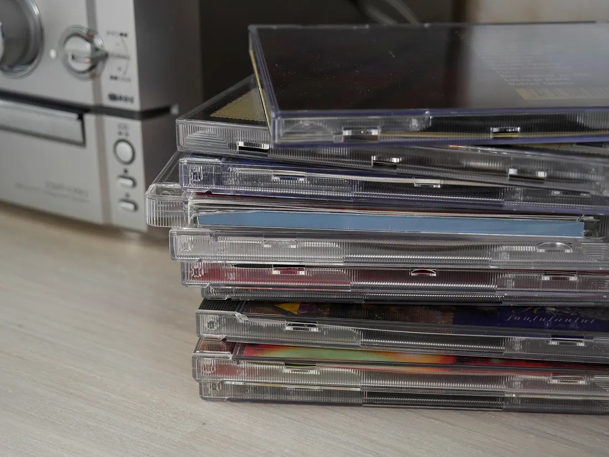
Запишу музыку на компакт-диск. Скажите, где будете слушать — в машине или дома, — и подберём Audio CD или диск с файлами.
Галерея
Кассетные деки, плееры, катушки и диски — техника, на которой выросла не одна семейная фонотека.
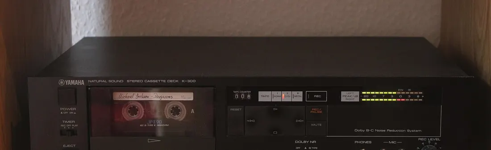
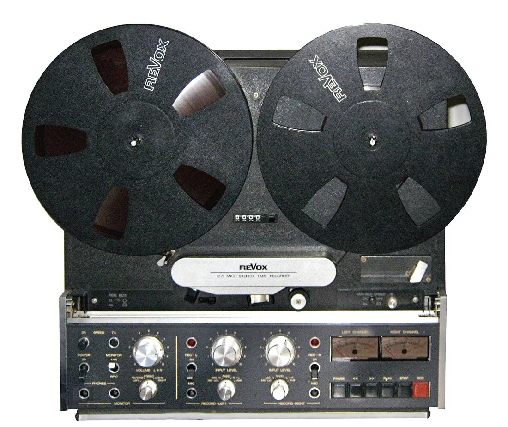
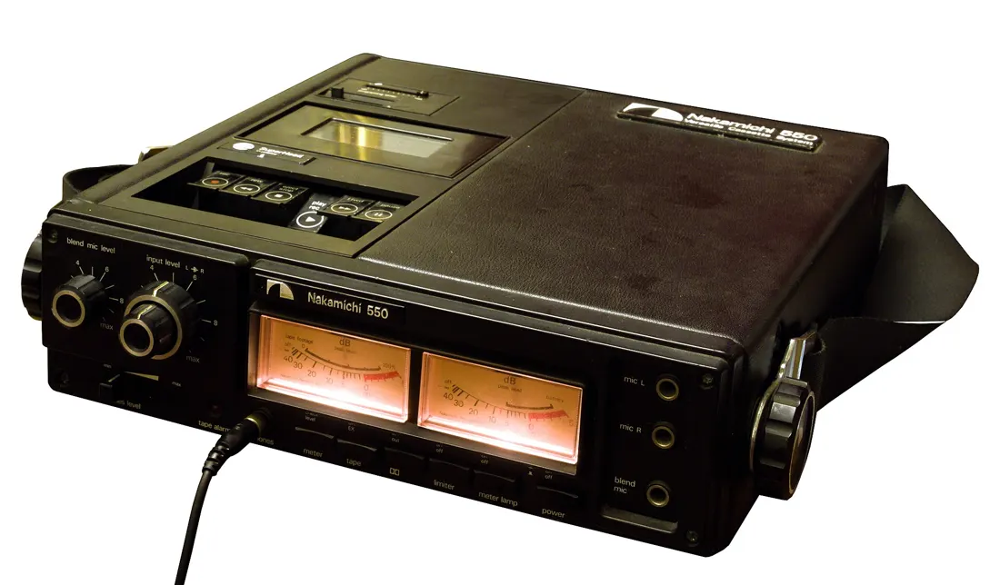
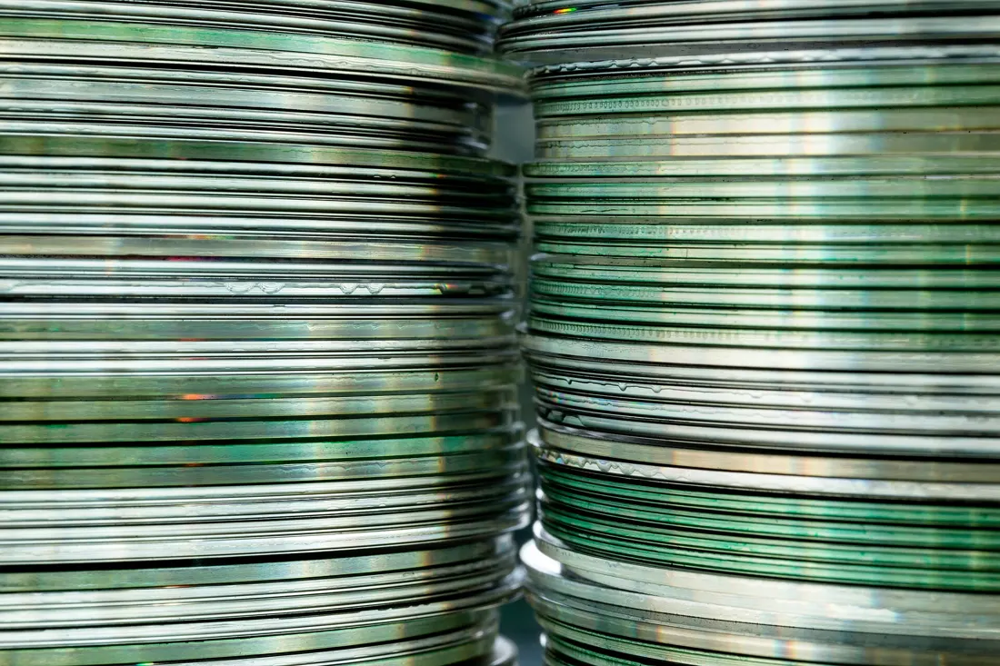
Как заказать
Что у вас есть, сколько кассет или песен и какой результат нужен.
Формат, цену, сроки и как удобнее передать носители или файлы.
Цифровые файлы, записанную кассету или CD — как договорились.
Стоимость и сроки зависят от объёма и состояния носителей. Называю их до начала работы.
Заявка
Опишите задачу своими словами и оставьте удобный контакт: телефон, Telegram, WhatsApp или email. Я отвечу и уточню детали.
Или напишите напрямую:
digitalaleksei@gmail.com
Вопросы
Выберите в заявке «нужна консультация» и напишите, на чём собираетесь слушать. Подскажу подходящий вариант.
Да. Пришлите список песен и порядок. Как передать музыку, длительность и носитель согласуем заранее.
Опишите её состояние в заявке. Результат зависит от состояния ленты — оценю до начала работы.
Имя, контакт и описание заказа передаются через сервис FormSubmit на digitalaleksei@gmail.com. Алексей использует их только для ответа и согласования заказа. Не указывайте пароли и платёжные данные. Чтобы удалить заявку, напишите на этот же адрес.